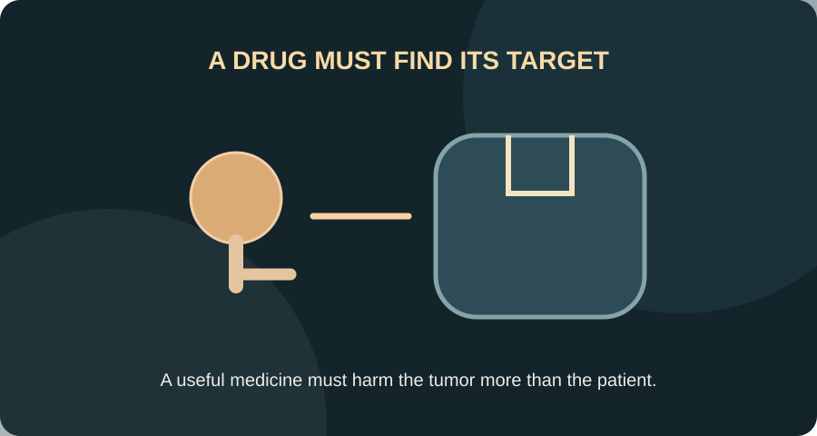
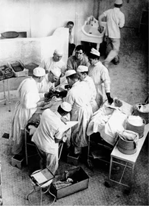

1. The problem of specificity
The previous chapters showed that surgery and radiation can attack cancer in a defined location, but malignant cells may spread beyond that location. A medicine circulating through the bloodstream might be able to reach those scattered cells. Yet that raises an extraordinarily difficult problem: how can a drug harm cancer without destroying the patient?
Killing a cell with a strong chemical is not particularly difficult. Many substances are toxic to living tissues. What doctors require is specificity—a treatment that acts strongly on the desired target while sparing as much healthy tissue as possible. Cancer cells are especially challenging because they arise from normal human cells and share much of their chemistry with them.
Mukherjee traces the origins of the idea of selective drugs to an industry that initially had nothing to do with medicine: the manufacture of colorful dyes for cloth.
2. The textile industry creates a new chemical world
In nineteenth-century Britain, textile production expanded dramatically. Mills processed vast amounts of imported cotton, including cotton linked to colonial trade. But coloring fabrics still depended heavily on dyes extracted from plants and other natural sources. Preparing and fixing these dyes could be slow, expensive, and unpredictable.
Chemists began searching for synthetic dyes—substances produced in a laboratory rather than harvested from fields. This helped create a new discipline of industrial chemical synthesis. Factories accumulated expertise in modifying molecules and manufacturing them in large quantities.
A chemical invented to color a piece of cloth might seem remote from a hospital ward. Yet its structure could later teach doctors something important about the selectivity of molecules in living systems.
3. William Perkin and mauve dye (1856)
In 1856, an eighteen-year-old British chemist named William Perkin was working in a makeshift laboratory when an unexpected reaction produced a purple substance. He found that it could dye fabric and that the color was durable. The substance became known as aniline mauve.
The discovery transformed synthetic dye production. Unlike many plant-based dyes, synthetic colors could be made more consistently. Chemists learned to modify a molecular framework to produce many new shades. Soon a huge range of chemical compounds appeared in laboratories and factories.
Germany became particularly important in this industry. Chemical companies developed large libraries of molecules and methods for manufacturing them. Researchers had access to an expanding world of compounds whose full biological possibilities were not yet understood.

4. Could the chemicals of life be made in a laboratory?
The author pauses to discuss an older scientific belief called vitalism. According to some versions of vitalism, substances produced by living organisms possessed a special life force that laboratory chemistry could not reproduce.
In 1828, chemist Friedrich Wöhler synthesized urea, a substance normally found in biological systems, from inorganic starting materials. This experiment challenged the sharp boundary people had imagined between living chemistry and ordinary chemical reactions.
If molecules essential to biology could be synthesized and transformed, perhaps a laboratory-created substance could also interfere with processes inside living cells. The connection between chemistry and medicine was becoming intellectually possible, even if the practical applications remained uncertain.
5. Paul Ehrlich notices that dyes select particular cells
In 1878, a young medical student named Paul Ehrlich began experimenting with chemical dyes on animal tissues. He expected that dyes might make microscope specimens easier to see. But he noticed a more intriguing pattern: different dyes did not color everything equally. Some bound more strongly to particular cellular structures, while other regions remained relatively unstained.
Why should one chemical attach to one structure and not another? The result suggested that biological molecules had distinctive properties. Certain compounds seemed able to recognize specific targets inside a living system.
Ehrlich continued studying these relationships, including chemical stains for bacteria and the way antitoxins could bind particular toxins. The idea of molecular affinity—that some substances recognize others with remarkable selectivity—became central to his thinking.
6. The lock-and-key concept
Imagine two locks with slightly different internal shapes. A key that opens the first may fail to open the second. Similarly, cells and microbes contain proteins and other structures with distinctive chemical properties. A molecule can sometimes interact with one target much more strongly than with others.
Ehrlich wondered whether a laboratory could discover or manufacture substances that would attach to a disease-causing organism and destroy it while largely sparing the host. Instead of giving a patient a general poison, doctors might give a chemical directed toward a particular microscopic target.
| Indiscriminate poison | Targeted medicine—the desired ideal |
|---|---|
| Harms many kinds of cells | Interacts more strongly with a defined target |
| Can kill cancer but also injure healthy tissues | Attempts to create a useful difference between disease and host |
| Little therapeutic advantage if toxicity is overwhelming | Benefit depends on selectivity and tolerable side effects |
This conceptual difference is one of the foundations of modern drug development.
7. Ehrlich's dream of a “magic bullet”
Ehrlich began testing chemical compounds for their effects on infectious organisms. He explored dye derivatives that might act against parasites and developed Trypan Red, an early result of his search. Later, he and collaborators identified compound 606, subsequently named Salvarsan, which was active against the microorganism causing syphilis.
The success of these chemicals encouraged a powerful metaphor: a magic bullet. A bullet strikes a target; its “magic” is the ability to do so with specificity rather than destroying everything around it. Ehrlich's phrase captured the dream of treating disease through directed chemistry.
By demonstrating that synthesized molecules could have useful and comparatively selective effects against certain infections, Ehrlich made chemical treatment an increasingly credible scientific strategy.
8. Why was cancer harder than syphilis?
Ehrlich then tried to apply the same principle to cancer. He tested many chemicals against malignant cells, searching for a substance that would destroy cancer without injuring normal human tissue. He failed to find the selective anticancer medicine he had hoped for.
The problem was fundamental. A bacterium or parasite may have enzymes and cellular structures very different from those of a human. That difference offers potential drug targets. A cancer cell, however, is a human cell. Its chemistry resembles that of the healthy cells around it, even though its behavior has become dangerous.
A chemical that stops the division of malignant cells may also stop the division of normal cells. Ehrlich understood that an effective anticancer treatment would require identifying a sufficiently important difference between a cancer cell and its normal ancestor.

9. Ehrlich explains the difficulty to the German Kaiser
Mukherjee recounts a meeting between Ehrlich and Kaiser Wilhelm in 1908. The emperor wanted to know whether a chemical cure for cancer was close. Ehrlich could not offer a confident promise. He explained that treating microbes and treating cancer were fundamentally different challenges.
The very reason selective drugs could work against bacteria—the biological distance between microbe and human—was largely absent in cancer. To find a drug that would distinguish abnormal cells from normal ones, researchers would first need to learn much more about the biology of normal cells.
The Kaiser found the explanation unsatisfying. But Ehrlich had identified a problem that would define much of the next century of cancer medicine.
10. An irony: The chemical factories move toward war
Ehrlich died in 1915, as Europe was being transformed by World War I. The chemical industry that had supplied dyes, laboratory reagents, and potential medicines was increasingly redirected toward producing materials for warfare.
The chapter begins to reveal a terrible historical connection. Synthetic chemistry could create helpful drugs, but it could also create lethal substances designed to harm human bodies. Some of these chemical weapons would later provide unexpected clues to treating cancer.
Thus the history of chemotherapy is intertwined with the history of industrial chemistry and chemical warfare—a deeply uncomfortable origin for medicines intended to save lives.
11. The deeper meaning of Chapter 10
The story shows how scientific ideas migrate between industries. Textile dyes inspired techniques for understanding and targeting living cells. It shows why specificity matters: a medicine is useful not merely because it can kill cancer but because its benefit exceeds the harm it causes. It also explains why cancer differs from an ordinary infection. A cancer cell and a healthy cell share a common ancestry and many biological mechanisms.
Ehrlich's unsuccessful search still mattered because it clarified the future task. Scientists would need to discover specific vulnerabilities within abnormal cells. Farber's antifolates represented one attempt to interfere with an important biological process, although their toxicity and limited duration made clear that the problem remained unsolved.
Chapter takeaway: Chemistry promised a systemic way to fight disease. But cancer made the dream of the “magic bullet” exceptionally difficult because the malignant target was a distorted version of the patient's own cells.